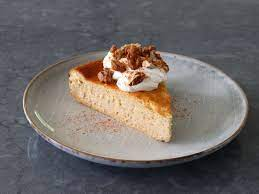

Cake
Butternut Squash Cheesecake
Indulge in the taste of fall with our Butternut Squash Cheesecake, a culinary masterpiece that combines the
velvety goodness of cheesecake with the rich, earthy flavors of butternut squash. This decadent dessert is a
celebration of autumn, featuring a spiced graham cracker crust that perfectly complements the smooth, creamy
filling. With each forkful, savor the warmth of cinnamon, nutmeg, and ginger dancing harmoniously with the
subtle sweetness of butternut squash. Topped with a drizzle of caramel or a dollop of whipped cream, this
cheesecake is an elegant and flavorful addition to your seasonal dessert repertoire.

Ingredients
- 2 cups all-purpose flour
- 1/2 cup unsweetened cocoa powder
- 1 teaspoon baking soda
- 1/4 teaspoon salt
- 1 cup unsalted butter, softened
- 1 cup granulated sugar
- 1 cup brown sugar, packed
- 2 large eggs
- 2 teaspoons vanilla extract
- 2 cups semisweet chocolate chips
- 1 cup chopped nuts (optional, such as walnuts or pecans)
Steps
- Preheat your oven to 350°F (175°C). Ensure the oven rack is positioned in the center.
- In a medium bowl, whisk together the all-purpose flour, cocoa powder, baking soda, and salt until well combined. Set aside.
- In a large mixing bowl, cream together the softened butter, granulated sugar, and brown sugar until light and fluffy.
- Beat in the eggs, one at a time, ensuring each is fully incorporated before adding the next. Add the vanilla extract and mix until well combined.
- Gradually add the dry ingredient mixture to the wet ingredients, mixing just until the flour is incorporated. Be careful not to overmix.
- Gently fold in the semisweet chocolate chips and chopped nuts (if using), distributing them evenly throughout the cookie dough.
- Drop rounded tablespoons of dough onto ungreased baking sheets, spacing them about 2 inches apart. You can also use a cookie scoop for uniform sizes.
- Bake in the preheated oven for 10-12 minutes or until the edges are set but the centers are still soft. The cookies will continue to firm up as they cool.
- Allow the cookies to cool on the baking sheets for a few minutes before transferring them to wire racks to cool completely.
- Once cooled, enjoy your homemade Double Chocolate Chip Cookies with a glass of milk or your favorite beverage!